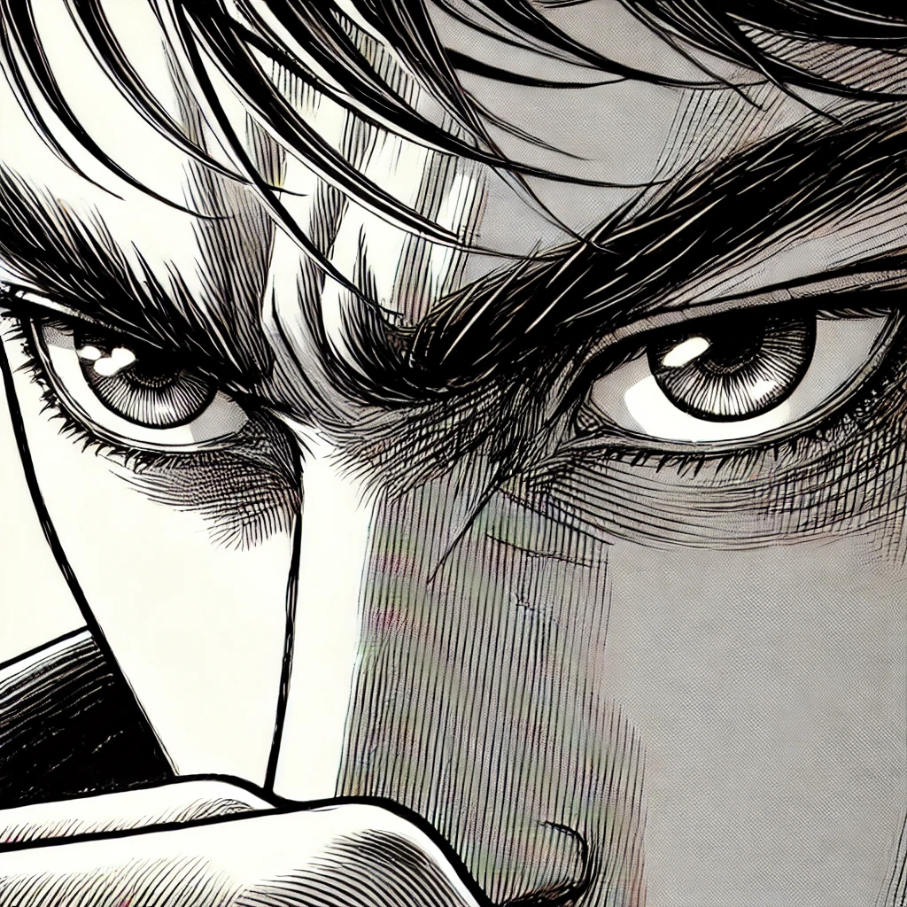

Chapter 1: The Recruitment
The first thing Colonel Adrienne Harper noticed about Airman Basic Marcus Steele wasn't his perfect posture or his exemplary service record—it was the way his eyes constantly scanned, assessed, adapted. Even in the sterile confines of her office, he was mapping exits, analyzing angles, preparing for contingencies he couldn't yet name.
whup whup whup
The summons had come through unusual channels. No paper trail, no digital footprint.
Officer: "Airman Steele, Colonel Harper is expecting you."
Marcus: "Understood, sir."
Marcus stepped out of the helicopter, his service uniform pristine despite the long journey to this unmarked facility.
Every detail noted. Every exit mapped.
Marcus's eyes scanned his surroundings, taking in every detail with a trained precision.
tap tap tap
His footsteps echoed through the sterile corridors as he followed the officer deeper into the facility, his shadow stretching and splitting behind him.

Harper: "Do you know why you're here, Airman?"
ゴゴゴゴ
Colonel Harper stood silhouetted in the doorway, her presence radiating authority and something else—anticipation.

Harper: "What I'm about to tell you exists in a space between official and unofficial, Airman..."
Harper's office was a study in contradictions—sleek technology blending with heavy reinforcement, her reflection fragmenting across the armored glass.
Harper: "...a space where the normal rules of engagement evolve."
Her eyes locked onto Marcus, sharp and assessing, hinting at augmentations that went beyond the strictly human.
Unusual channels. Unmarked facility. Quantum encryption on the summons.
The pieces were assembling into an unsettling picture.
Marcus stood ramrod straight, his exterior calm belying the cyclone of thoughts beneath.
Harper: "Welcome to Project Apex. We exist in superposition.
Our operators are both here and not here. Present and absent.
Living and... theoretical."
hummmmm
The room filled with the electric hum of holographic projections springing to life, casting Harper and Marcus in an ethereal blue glow—schematics and secrets hanging in the air between them.
In that moment, Marcus understood that the world as he knew it was about to tilt on its axis. The only question was how far he'd let it pull him off course.